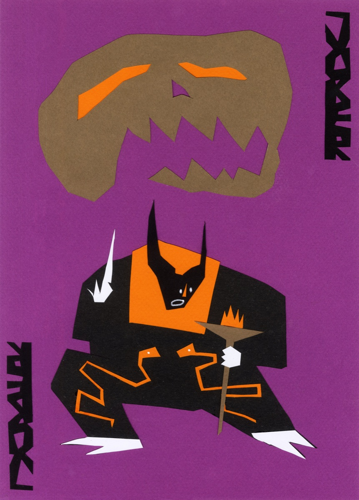
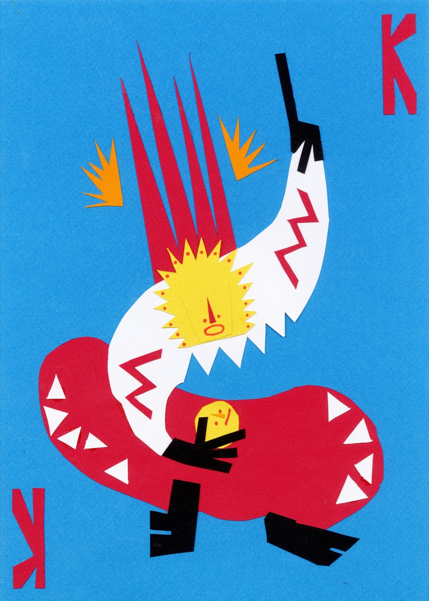
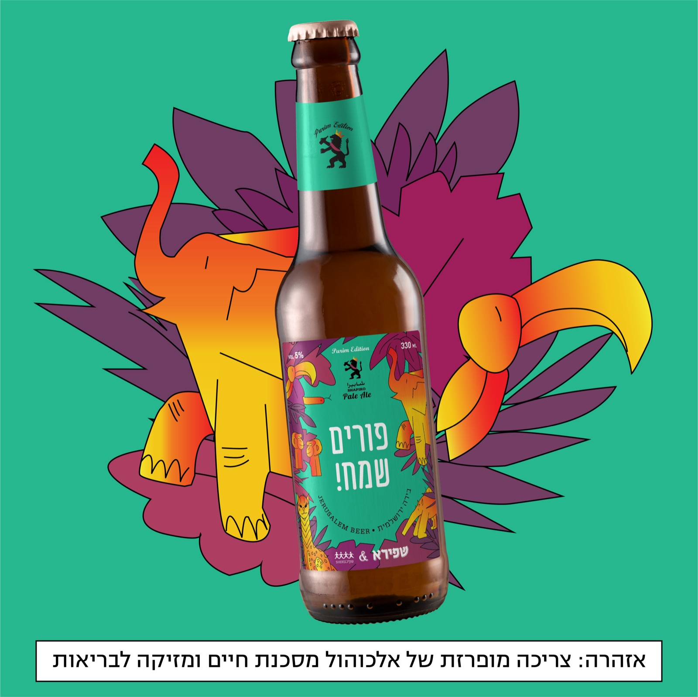
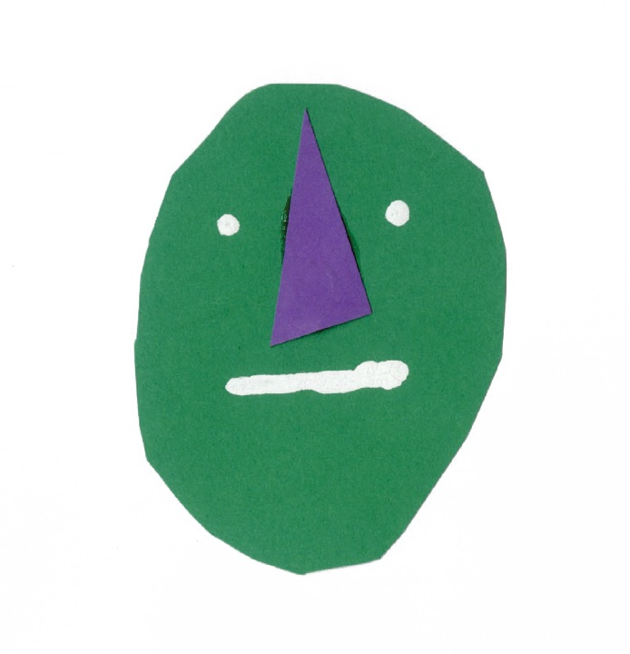
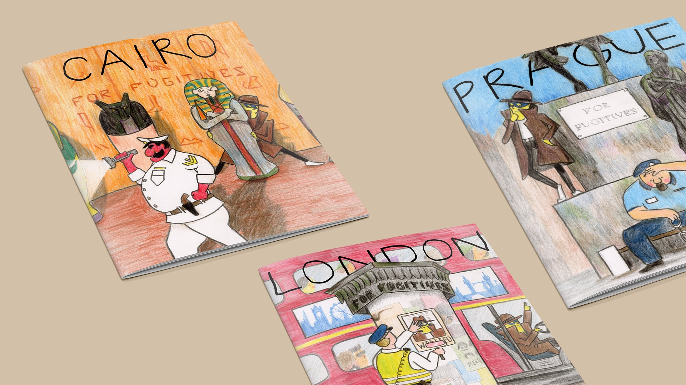
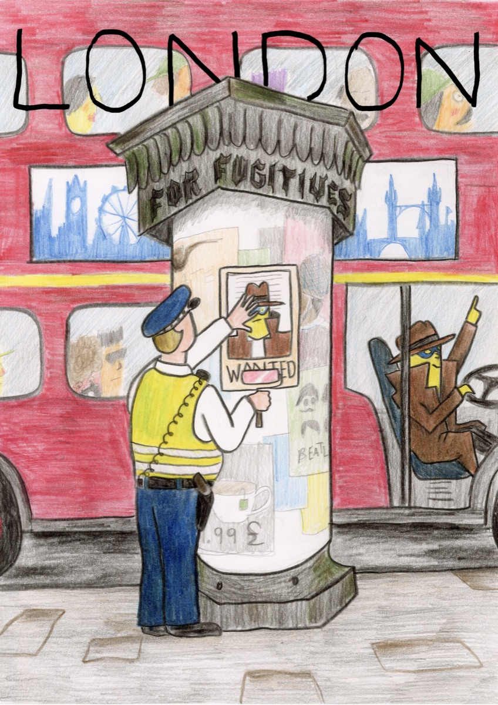
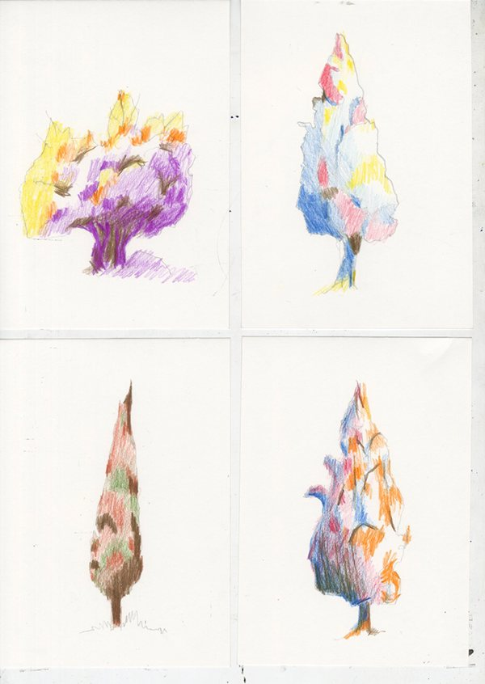
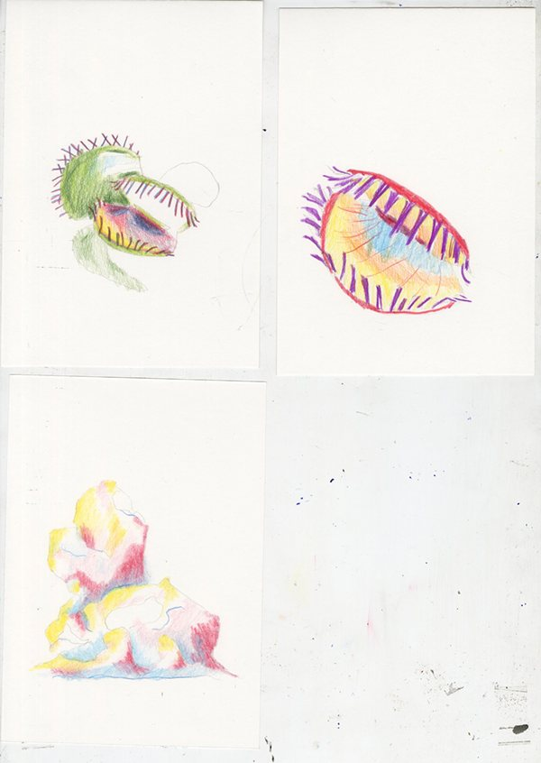
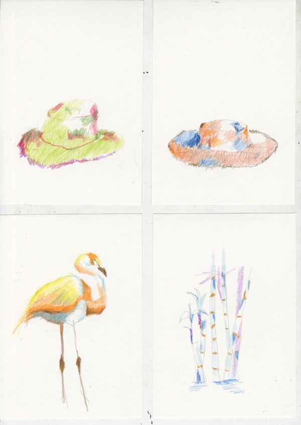

ILLUSTRATIONS
Illustrations for playing cards featuring a King, Queen, and Joker, inspired by Inca culture and South American deities.




A special Purim edition beer label for Shapira, a local Israeli brewery, created as part of my volunteer work with Shekel, an organization supporting people with disabilities. I collaborated with Refael, an autistic illustrator, adapting his artwork and designing the final label.

self portrait

Speculative travel guide covers designed for fugitives, created as part of an illustration course at Bezalel.
The project reimagines the traditional tourist guide for an unconventional audience.




A Collection of Colored Pencil Illustrations.




F00TBALL